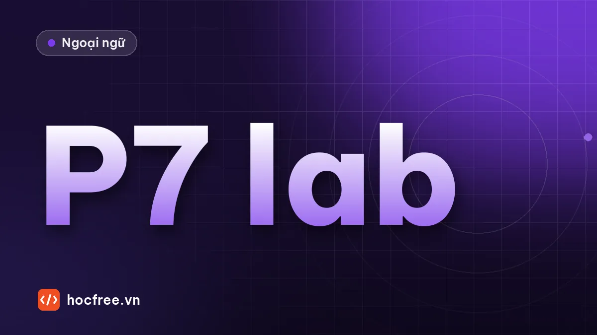

Luyện tập TOEIC Part 7: đoạn đơn, đoạn kép bấm giờ
Ba đoạn đơn và một bộ đoạn kép tự biên soạn với 16 câu hỏi, giới hạn thời gian theo nhịp thi thật, đáp án chỉ rõ câu chứa thông tin.

Học xong bài này, bạn sẽ
- Làm đoạn đơn và đoạn kép đúng giờ
- Phân loại câu sai theo dạng
- Đo tốc độ đọc của bản thân
Nên học trước: Đoạn kép và đoạn ba
Nội dung bài viết
Bài luyện gồm 3 đoạn đơn và 1 bộ đoạn kép do HọcFree tự biên soạn, tổng cộng 16 câu hỏi. Giới hạn thời gian là 16 phút, đúng nhịp khoảng 1 phút mỗi câu như thi thật. Ghi lại thời điểm bắt đầu và kết thúc từng bài để biết bạn đang nhanh hay chậm ở đâu.
Bài 1: chuỗi tin nhắn (câu 1–3)
Hung Le [3:40 P.M.]: Hi Thao, the auditors from Kyoto Parts will arrive tomorrow at 8:30 instead of 10.
Thao Mai [3:41 P.M.]: That's earlier than we planned. Is the meeting room ready?
Hung Le [3:43 P.M.]: Room 2 is booked by the sales team until 9, so we'll need another room.
Thao Mai [3:44 P.M.]: Room 5 is free all morning. I'll reserve it now.
Hung Le [3:45 P.M.]: Perfect. Could you also print 6 copies of the inspection reports?
Thao Mai [3:46 P.M.]: Consider it done.
1. What has changed? (A) The number of auditors (B) The arrival time of some visitors (C) The location of the factory (D) The date of an audit
2. Why will Room 2 not be used? (A) It is too small. (B) It is being cleaned. (C) Another team is using it. (D) It has no projector.
3. At 3:46 P.M., what does Ms. Mai mean when she writes, "Consider it done"? (A) She has already finished the reports. (B) She will print the documents. (C) She thinks the audit is over. (D) She wants Mr. Le to do the task.
Bài 2: thông báo (câu 4–7)
Notice to All Staff: New Visitor Policy
Starting Monday, November 3, all visitors to our Binh Duong plant must be registered online at least 24 hours before their visit. Employees who invite visitors should complete the form on the company intranet, including the visitor's full name, company and purpose of visit.
On arrival, visitors will receive a badge at the security gate and must be accompanied by the inviting employee at all times. Visitors are not allowed to take photographs inside the production area.
Delivery drivers and contractors already registered with the Purchasing Department are not affected by this policy. For questions, please contact the Security Office at extension 300.
4. What is the purpose of the notice? (A) To announce a new security procedure (B) To introduce a new employee (C) To advertise a factory tour (D) To request photographs
5. What must employees do before inviting a visitor? (A) Call the Purchasing Department (B) Submit an online form (C) Collect a badge (D) Pay a fee
6. What is NOT required of visitors? (A) Wearing a badge (B) Staying with an employee (C) Not taking photos in the production area (D) Showing a passport
7. Who does the policy NOT apply to? (A) Customers (B) Registered contractors (C) New employees (D) Job applicants
Bài 3: bài báo (câu 8–11)
Local Bakery Chain Expands North
HO CHI MINH CITY – Sunrise Bakery, which operates 35 shops in the southern provinces, will open its first stores in Hanoi next spring. —[1]— The company plans to open five locations in the capital by the end of next year.
"Many of our customers travel between the two cities, and they often ask when we'll come to Hanoi," said founder Vo Thi Kim. —[2]— To support the expansion, Sunrise will build a central kitchen in Hung Yen province, which will supply fresh bread to all northern shops every morning. —[3]—
The company also plans to launch a mobile ordering app in January. Customers will be able to order online and collect their purchases without waiting in line. —[4]—
8. What is the article mainly about? (A) A new bakery recipe (B) A company's plans to grow (C) A mobile app competition (D) Problems with bread delivery
9. Why does Ms. Vo mention customers who travel? (A) To explain the reason for the expansion (B) To describe a new delivery service (C) To complain about traffic (D) To announce a discount
10. The word "launch" in paragraph 3, line 1, is closest in meaning to (A) throw (B) introduce (C) eat (D) send
11. In which position does the following sentence best belong? "The facility is expected to create around 200 jobs." (A) [1] (B) [2] (C) [3] (D) [4]
Bài 4: đoạn kép (câu 12–16)
Văn bản 1: Quảng cáo
QuickPrint Office Services – Business card printing
Standard (matte paper): 100 cards – $15 · 500 cards – $55
Premium (thick glossy paper): 100 cards – $25 · 500 cards – $95Free delivery for orders over $50. Standard orders are ready in 2 business days; premium orders in 4 business days.
Văn bản 2: Email
To: orders@quickprint.vn
From: Kevin Do
Date: Monday, March 9Hello,
I'd like to order 500 business cards for our new sales manager, Ms. Yen Nguyen. Since she will give them to important clients, we'd like the thick glossy paper. The design file is attached. Ms. Nguyen starts work on Monday, March 16, so we would need the cards delivered to our office before then.
Best regards,
Kevin Do, Office Manager, Delta Freight
12. Why did Mr. Do write the e-mail? (A) To hire a sales manager (B) To order printed materials (C) To complain about a delivery (D) To ask for a design
13. Who is Ms. Nguyen? (A) A QuickPrint employee (B) A new employee at Delta Freight (C) An important client (D) Mr. Do's supervisor
14. How much will Mr. Do's order cost? (A) $25 (B) $55 (C) $95 (D) $150
15. What is indicated about the order? (A) It will be delivered free of charge. (B) It will be ready in two business days. (C) It requires a new design. (D) It is for 100 cards.
16. By when will the cards most likely be ready? (A) Wednesday, March 11 (B) Friday, March 13 (C) Monday, March 16 (D) Wednesday, March 18
Đáp án
Xem đáp án và giải thích
| Câu | Đáp án | Dạng | Giải thích |
|---|---|---|---|
| 1 | B | Chi tiết | arrive tomorrow at 8:30 instead of 10 |
| 2 | C | Chi tiết | booked by the sales team until 9 |
| 3 | B | Ý định | Trả lời yêu cầu in 6 bản: cô ấy sẽ làm ngay |
| 4 | A | Mục đích | New Visitor Policy |
| 5 | B | Chi tiết | complete the form on the company intranet |
| 6 | D | NOT | Không nhắc đến hộ chiếu |
| 7 | B | Chi tiết | contractors already registered… are not affected |
| 8 | B | Ý chính | Mở cửa hàng ở Hà Nội, bếp trung tâm, ứng dụng |
| 9 | A | Mục đích chi tiết | Khách thường hỏi khi nào ra Hà Nội → lý do mở rộng |
| 10 | B | Đồng nghĩa | launch an app = giới thiệu, ra mắt |
| 11 | C | Vị trí câu | The facility phải chỉ một cơ sở vừa được nhắc: bếp trung tâm ở Hưng Yên, ngay trước [3]. [1] và [2] chưa có cơ sở nào; [4] nói về ứng dụng, không phải cơ sở. |
| 12 | B | Mục đích | Đặt in danh thiếp |
| 13 | B | Suy luận | our new sales manager… starts work on Monday |
| 14 | C | Nối thông tin | 500 thẻ, giấy dày bóng = Premium → $95 |
| 15 | A | Nối thông tin | $95 > $50 → miễn phí giao hàng |
| 16 | B | Nối thông tin | Premium cần 4 ngày làm việc từ thứ Hai 9/3 → khoảng thứ Sáu 13/3, kịp trước 16/3 |
Chữa bài
- Ghi thời gian từng bài. Bài nào vượt quá số câu × 1 phút?
- Phân loại câu sai theo 6 dạng ở bài các dạng câu hỏi Part 7.
- Với mỗi câu sai, gạch câu chứa đáp án trong bài và ghi cặp paraphrase vào sổ.
- Câu 14–16 là nhóm nối thông tin. Sai một trong ba câu này nghĩa là bạn cần luyện thêm quy trình đoạn kép.
| Kết quả | Đánh giá |
|---|---|
| 14–16 đúng, trong 16 phút | Sẵn sàng cho mục tiêu 700+ |
| 11–13 đúng | Đạt mức mục tiêu khoảng 65–70% |
| Dưới 11 hoặc quá 20 phút | Luyện thêm skimming, scanning và một bộ đoạn kép mỗi ngày trong tuần tới |
Bài tập thực hành
- Làm toàn bộ bài luyện trong 16 phút, ghi lại thời gian từng đoạn.
- Phân loại câu sai theo 6 dạng câu hỏi, chọn dạng sai nhiều nhất để luyện thêm 3 ngày.
Làm xong bài tập mới chuyển sang bài tiếp theo: tự làm, nói thành tiếng và chữa lỗi là cách duy nhất để nhớ lâu.